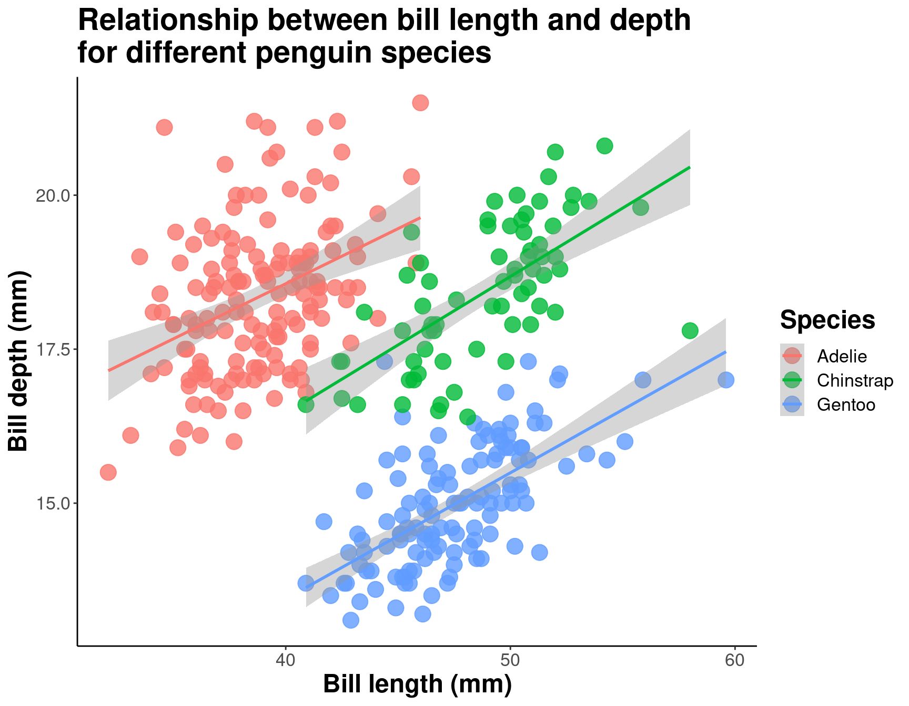
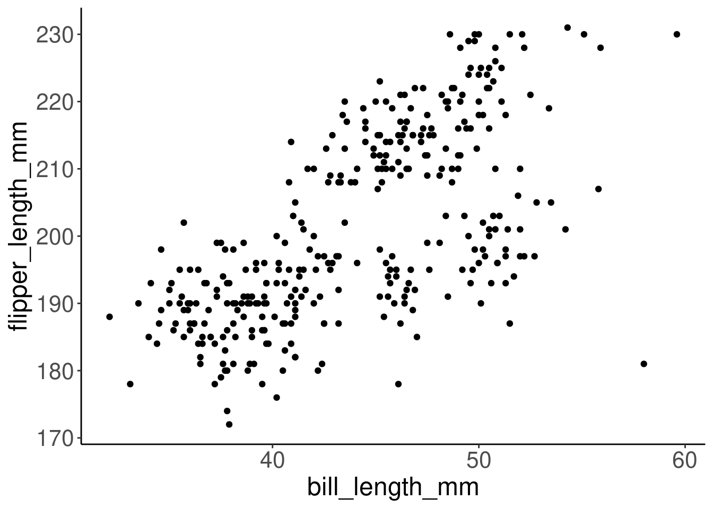

Chapitre 6 Les bases de la visualisation de données
6.1 Le jeu de données: palmerpenguins
Essayons maintenant de visualiser des données! Nous allons utiliser le jeu de données palmerpenguins.
.](images/palmerpenguins.png)
Figure 6.1: Art par Allison Horst.
Ce jeu de données contient des mesures morphologiques pour trois espèces de pingouins observées sur trois îles de l’archipel Palmer, en Antarctique. Ces données ont été recueillies de 2007 à 2009 par la Dre Kristen Gorman dans le cadre du programme de recherche écologique à long terme de la station Palmer, qui fait partie du réseau américain de recherche écologique à long terme.
.](images/penguins.png)
Figure 6.2: Artwork by Allison Horst.
This dataset is often used to replace the iris dataset, which has some problems for teaching data science, including its ties to eugenics (more on this at armchairecology.blog/iris-dataset).
Cet ensemble de données a également été utilisé pour un défi TidyTuesday, montrant les nombreuses possibilités de visualisation créative de l’ensemble de données. Par exemple : ceci, and ceci.
Regardons les variables de l’ensemble de données des pingouins :
str(penguins) # regardons les données des pingouins !## tibble [344 × 8] (S3: tbl_df/tbl/data.frame)
## $ species : Factor w/ 3 levels "Adelie","Chinstrap",..: 1 1 1 1 1 1 1 1 1 1 ...
## $ island : Factor w/ 3 levels "Biscoe","Dream",..: 3 3 3 3 3 3 3 3 3 3 ...
## $ bill_length_mm : num [1:344] 39.1 39.5 40.3 NA 36.7 39.3 38.9 39.2 34.1 42 ...
## $ bill_depth_mm : num [1:344] 18.7 17.4 18 NA 19.3 20.6 17.8 19.6 18.1 20.2 ...
## $ flipper_length_mm: int [1:344] 181 186 195 NA 193 190 181 195 193 190 ...
## $ body_mass_g : int [1:344] 3750 3800 3250 NA 3450 3650 3625 4675 3475 4250 ...
## $ sex : Factor w/ 2 levels "female","male": 2 1 1 NA 1 2 1 2 NA NA ...
## $ year : int [1:344] 2007 2007 2007 2007 2007 2007 2007 2007 2007 2007 ....](images/culmen_depth.png)
Figure 6.3: Art par Allison Horst.
Notez que l’espèce, l’île et le sexe (species, island, et sex) sont des facteurs, qui seront importantes pour regrouper les données avec des couleurs, des formes, etc. dans ggplot2. Il y a ensuite 2 variables numériques (mesures du bec représentées dans l’image), et deux variables entières (longueur des nageoires et masse corporelle). Les données ont également une petite composante temporelle (year), s’étendant de 2007 à 2009.
La librairie ggplot2 requiert de préparer les données comme un objet de la classe ‘data.frame’ ou ‘tibble’ (commun dans l’univers tidyverse).
class(penguins) # vérifier la classe des données pour s'assurer qu'il s'agit d'un data.frame ou d'un tibble pour ggplot2## [1] "tbl_df" "tbl" "data.frame"# vous pouvez transformer un ensemble de données en tibble
# via la fonction as_tibble() si nécessaire peng <-
# tibble::as_tibble(penguins) class(peng)♻ Rappel de l’atelier 2 - Charger et manipuler des données:
Les graphiques plus complexes dans les ggplot2 nécessitent que les données soient en format long.
6.2 Questions scientifiques à propos des pingouins
Quelles sont quelques questions scientifiques auxquelles nous pourrions vouloir répondre avec ce jeu de données? Voici quelques exemples:
- Y a-t-il une relation entre la longueur et la profondeur des becs ?
- Est-ce que la taille des becs et des nageoires varient ensemble ?
- Comment ces mesures sont-elles réparties entre les 3 espèces ?
Comment pouvons-nous répondre graphiquement à ces questions avec ggplot2?
6.3 Explorer la structure des données
Si nous voulons avoir un aperçu général de nos données, nous pouvons commencer par utiliser la fonction ggpairs() du paquet GGally (que nous avons chargé et installé au début de l’atelier). Cela nous permettra d’examiner les relations préliminaires, avant de les explorer plus en détail.
# Voir un aperçu général de nos données avec plusieurs
# types de graphiques
ggpairs(penguins, aes(colour = species), progress = FALSE) +
theme_bw()
On peut déjà voir certains regroupements d’espèces entre la longueur et la profondeur du bec, la longueur des nageoires et la masse corporelle. Lors de la visualisation, il faudra garder à l’esprit que la différenciation des espèces peut être importante.
Remarquez-vous ces regroupements? Nous devrions explorer comment certaines de ces données sont structurées par espèce!
# Explorons comment nos données sont structurées par espèce
ggplot(data = penguins, # Données
aes(x = bill_length_mm, # Valeurs X
y = bill_depth_mm, # Valeurs Y
col = species)) + # Esthétique (mettre une couleur par espèce)
geom_point(size = 5, alpha = 0.8) + # Points
geom_smooth(method = "lm") + # Régression linéaire
labs(title = "Relationship between bill length and depth\nfor different penguin species", # Title
x = "Bill length (mm)", # titre de l'axe des X
y = "Bill depth (mm)", # titre de l'axe des Y
col = "Species") + # Légende pour les couleurs dans aes(col = species)
theme_classic() + # Utiliser un thème propre
theme(title = element_text(size = 18, face = "bold"),
text = element_text(size = 16))
En différenciant les espèces, on peut voir qu’il existe une relation assez cohérente entre la longueur et la profondeur du bec entre les espèces (pentes similaires), mais que les gammes de ces variables sont différentes (les regroupements sont clairement indiqués par les couleurs). Les pingouins Adélie ont tendance à avoir une longueur de bec plus petite mais une profondeur de bec assez grande, alors que l’inverse est vrai pour les pingouins Gentoo.
6.4 La dynamique ggplot() par couches
Comme nous l’avons vu, un graphique est constitué de différentes couches, combinées ensemble pour communiquer visuellement des informations dans nos données. Construisons un graphique ggplot étape par étape en ajoutant une couche à la fois.
Le code ggplot2 est plus facile à lire si chaque ligne représente un nouvel élément. C’est ce style qui est généralement privilégié pour le code ggplot2 dans la communauté R. Cela signifie que lorsque vous ajoutez chaque couche, vous devriez commencer une nouvelle ligne.
.](images/gglayers.png)
Figure 6.4: Image adapted from The Grammar of Graphics.
6.4.1 La couche de données
# Couche 1: Données
ggplot(data = penguins)
# Sans autre information, vos données ne seront pas
# visualisées.6.4.2 La couche d’esthétiques
Dans ggplot2, l’esthétique est un groupe de paramètres qui spécifie les données à afficher et la manière de les afficher. Ici, nous demandons à R de tracer longueur_de_bill_mm sur l’axe x et profondeur_de_bill_mm sur l’axe y. Nous n’avons pas encore dit à R comment nous voulons représenter les données, donc nos données ne seront pas encore tracées.
# Prochaine couche: esthétiques Ici, nous disons à R de
# tracer la longueur sur l'axe des x, et la profondeur sur
# l'axe des y. mais nous n'avons toujours pas dit à R
# comment nous voulons que ces données soient
# représentées...
ggplot(data = penguins, aes(x = bill_length_mm, y = bill_depth_mm))
# Vous voyez ? Nos variables sont maintenant assignées aux
# axes x et y, mais rien n'est encore tracé.6.4.3 La couche de géométries
Les objets géométriques, ou geoms, déterminent la représentation visuelle de vos données. Nous pouvons commencer par représenter nos points de données sous la forme d’un nuage de points, pour voir comment la profondeur et la longueur du bec sont liées l’une à l’autre.
# Prochaine couche(s): géométries
ggplot(data = penguins,
aes(x = bill_length_mm,
y = bill_depth_mm)) + # Utilisez le signe + pour ajouter chaque couche
geom_point() # La couche geom détermine le type de tracé que nous utilisons.
# geom_point() trace les données sous forme de points !Notez que vous pouvez ajouter plusieurs geoms dans un seul graphique. Par exemple, nous pouvons ajouter une ligne sur ce graphique pour montrer une valeur seuil, ou ajouter une régression linéaire. Pour l’instant, gardons la simplicité!
6.4.4 Facettes, coordonnées, et thèmes
Maintenant que le jeu de données est représenté graphiquement, nous pouvons personnaliser le graphique pour clarifier le message ou ajouter des informations supplémentaires. Les facettes sont un moyen populaire de diviser un graphique en plusieurs fenêtres selon une catégorie de données, afin de différencier visuellement les groupes. Nous pouvons explorer ce graphique différemment si nous utilisons facet_wrap() pour créer des ‘facettes’ séparées en fonction de nos groupes d’espèces:
# Prochaine couche(s): customizations! Les facettes
# divisent un graphique en fenêtres séparées selon une
# certaine catégorie dans les données.
ggplot(data = penguins, aes(x = bill_length_mm, y = bill_depth_mm)) +
geom_point() + facet_wrap(vars(species)) # Cela divise le graphique en trois fenêtres : une par espèce.Note: Vous pouvez aussi utiliser facet_grid() si vous voulez faire une facette selon deux variables.
Nous pouvons également ajuster l’échelle de nos axes dans le graphique lui-même, plutôt que de transformer les données. Supposons que nous souhaitions étudier la relation entre les mesures du bec sur une échelle de \(log_{10}\).
ggplot(data = penguins, aes(x = bill_length_mm, y = bill_depth_mm)) +
geom_point() + facet_wrap(vars(species)) + # ceci transforme les coordonnées des axes avec log10() geom_point()
geom_point() + facet_wrap(vars(species)) + # ceci transforme les coordonnées des axes avec log10() +
geom_point() + facet_wrap(vars(species)) + # ceci transforme les coordonnées des axes avec log10() facet_wrap(vars(species))
geom_point() + facet_wrap(vars(species)) + # ceci transforme les coordonnées des axes avec log10() +
geom_point() + facet_wrap(vars(species)) + # ceci transforme les coordonnées des axes avec log10() #
geom_point() + facet_wrap(vars(species)) + # ceci transforme les coordonnées des axes avec log10() ceci
geom_point() + facet_wrap(vars(species)) + # ceci transforme les coordonnées des axes avec log10() transforme
geom_point() + facet_wrap(vars(species)) + # ceci transforme les coordonnées des axes avec log10() les
geom_point() + facet_wrap(vars(species)) + # ceci transforme les coordonnées des axes avec log10() coordonnées
geom_point() + facet_wrap(vars(species)) + # ceci transforme les coordonnées des axes avec log10() des
geom_point() + facet_wrap(vars(species)) + # ceci transforme les coordonnées des axes avec log10() axes
geom_point() + facet_wrap(vars(species)) + # ceci transforme les coordonnées des axes avec log10() avec
geom_point() + facet_wrap(vars(species)) + # ceci transforme les coordonnées des axes avec log10() log10()
coord_trans(x = "log10", y = "log10")Pour terminer, nous pouvons également personnaliser le thème du graphique, qui comprend son arrière-plan, les quadrillages et d’autres caractéristiques visuelles du graphique. Supposons que nous n’aimons pas le fond gris par défaut de ggplot2 (nous ne serions pas les seuls!). Nous pouvons utiliser theme_bw() pour produire un rendu visuel plus attrayant. Nous discuterons des thèmes dans le chapitre 11!
ggplot(data = penguins, aes(x = bill_length_mm, y = bill_depth_mm)) +
geom_point() + facet_wrap(vars(species)) + coord_trans(x = "log10",
y = "log10") + # ce thème produit un rendu visuel plus attrayant y
y = "log10") + # ce thème produit un rendu visuel plus attrayant =
y = "log10") + # ce thème produit un rendu visuel plus attrayant "log10")
y = "log10") + # ce thème produit un rendu visuel plus attrayant +
y = "log10") + # ce thème produit un rendu visuel plus attrayant #
y = "log10") + # ce thème produit un rendu visuel plus attrayant ce
y = "log10") + # ce thème produit un rendu visuel plus attrayant thème
y = "log10") + # ce thème produit un rendu visuel plus attrayant produit
y = "log10") + # ce thème produit un rendu visuel plus attrayant un
y = "log10") + # ce thème produit un rendu visuel plus attrayant rendu
y = "log10") + # ce thème produit un rendu visuel plus attrayant visuel
y = "log10") + # ce thème produit un rendu visuel plus attrayant plus
y = "log10") + # ce thème produit un rendu visuel plus attrayant attrayant
theme_bw()6.5 Défi 1
Il est maintenant temps d’essayer de construire votre propre graphique ! Créez un ggplot pour répondre aux questions suivantes:
1. Y a-t-il une relation entre la longueur des becs et la longueur des nageoires des pingouins?
2. La longueur des becs augmente-t-elle avec celle des nageoires?
Paramètres à prendre en compte pour répondre à cette question:
| données | géométrie | valeurs x | valeurs y |
|---|---|---|---|
| penguins | geom_point | bill_length_mm | flipper_length_mm |
6.5.1 Défi 1: Solution
Créons un nuage de points avec la longueur du bec sur l’axe des x et la longueur de la nageoire sur l’axe des y, afin de visualiser la relation entre ces deux variables.
# Faire un nuage de points pour visualiser la relation
# entre nos variables
ggplot(data = penguins, aes(x = bill_length_mm, y = flipper_length_mm)) +
geom_point()
L’esthétique peut être soit dans la ligne ggplot(), et sera héritée par tous les géomètres, soit dans la ligne geom_() pour ne s’appliquer qu’à ce géomètre. Voici un exemple.
# Personnalisez la forme et la couleur des points
ggplot(data = penguins, aes(x = bill_length_mm, y = flipper_length_mm)) +
geom_point(shape = 2, color = "blue")Les couleurs, l’alpha (transparence), la forme et la taille peuvent être définies en dehors des valeurs de aes(), et seront statiques, sans dépendre des données. Ici, le bleu ne transmet aucune information dans les données - c’est juste un choix que nous avons fait pour rendre le graphique plus joli.
Ce graphique semble montrer une relation positive entre la longueur du bec et la longueur des nageoires pour tous les individus mesurés dans l’ensemble des données. Ainsi, les pingouins avec un bec plus long ont tendance à avoir des nageoires plus longues. Nous pouvons continuer à creuser cette relation en nous basant sur ce graphique!